NumPy: creating and manipulating numerical data¶
| authors: | Emmanuelle Gouillart, Didrik Pinte, Gaël Varoquaux, and Pauli Virtanen |
|---|
Chapters contents
The numpy array object¶
What are Numpy and numpy arrays¶
Python has built-in:
- containers: lists (costless insertion and append), dictionnaries (fast lookup)
- high-level number objects: integers, floating point
Numpy is:
- extension package to Python for multidimensional arrays
- closer to hardware (efficiency)
- designed for scientific computation (convenience)
>>> import numpy as np
>>> a = np.array([0, 1, 2, 3])
>>> a
array([0, 1, 2, 3])
For example:
An array containing:
- discretized time of an experiment/simulation
- signal recorded by a measurement device
- pixels of an image
- ...
Why it is useful: Memory-efficient and fast container for numerical operations.
In [1]: l = range(1000)
In [2]: %timeit [i**2 for i in l]
1000 loops, best of 3: 403 us per loop
In [3]: a = np.arange(1000)
In [4]: %timeit a**2
100000 loops, best of 3: 12.7 us per loop
Reference documentation¶
On the web: http://docs.scipy.org/
Interactive help:
>>> help(np.array) array(object, dtype=None, copy=True, order=None, subok=False, ndmin=0) Create an array. Parameters ---------- object : array_like ... Examples -------- >>> np.array([1, 2, 3]) array([1, 2, 3]) ...
Looking for something:
>>> np.lookfor('create array') Search results for 'create array' --------------------------------- numpy.array Create an array. numpy.memmap Create a memory-map to an array stored in a *binary* file on disk. ...
>>> help(np.lookfor) ...
Creating arrays¶
1-D:
>>> a = np.array([0, 1, 2, 3])
>>> a
array([0, 1, 2, 3])
>>> a.ndim
1
>>> a.shape
(4,)
>>> len(a)
4
2-D, 3-D, ...:
>>> b = np.array([[0, 1, 2], [3, 4, 5]]) # 2 x 3 array
>>> b
array([[ 0, 1, 2],
[ 3, 4, 5]])
>>> b.ndim
2
>>> b.shape
(2, 3)
>>> len(b) # returns the size of the first dimension
2
>>> c = np.array([[[1], [2]], [[3], [4]]])
>>> c
array([[[1],
[2]],
[[3],
[4]]])
>>> c.shape
(2, 2, 1)
In practice, we rarely enter items one by one...
Evenly spaced:
>>> import numpy as np >>> a = np.arange(10) # 0 .. n-1 (!) >>> a array([0, 1, 2, 3, 4, 5, 6, 7, 8, 9]) >>> b = np.arange(1, 9, 2) # start, end (exlusive), step >>> b array([1, 3, 5, 7])or by number of points:
>>> c = np.linspace(0, 1, 6) # start, end, num-points >>> c array([ 0. , 0.2, 0.4, 0.6, 0.8, 1. ]) >>> d = np.linspace(0, 1, 5, endpoint=False) >>> d array([ 0. , 0.2, 0.4, 0.6, 0.8])Common arrays:
>>> a = np.ones((3, 3)) # reminder: (3, 3) is a tuple >>> a array([[ 1., 1., 1.], [ 1., 1., 1.], [ 1., 1., 1.]]) >>> b = np.zeros((2, 2)) >>> b array([[ 0., 0.], [ 0., 0.]]) >>> c = np.eye(3) >>> c array([[ 1., 0., 0.], [ 0., 1., 0.], [ 0., 0., 1.]]) >>> d = np.diag(np.array([1, 2, 3, 4])) >>> d array([[1, 0, 0, 0], [0, 2, 0, 0], [0, 0, 3, 0], [0, 0, 0, 4])np.random: random numbers (Mersenne Twister PRNG):
>>> a = np.random.rand(4) # uniform in [0, 1] >>> a array([ 0.58597729, 0.86110455, 0.9401114 , 0.54264348]) >>> b = np.random.randn(4) # Gaussian >>> b array([-2.56844807, 0.06798064, -0.36823781, 0.86966886]) >>> np.random.seed(1234) # Setting the random seed
Exercise: Array creation
Create the following arrays (with correct data types):
[[ 1 1 1 1]
[ 1 1 1 1]
[ 1 1 1 2]
[ 1 6 1 1]]
[[0. 0. 0. 0. 0.]
[2. 0. 0. 0. 0.]
[0. 3. 0. 0. 0.]
[0. 0. 4. 0. 0.]
[0. 0. 0. 5. 0.]
[0. 0. 0. 0. 6.]]
Par on course: 3 statements for each
Exercise: Tiling for array creation
Skim through the documentation for np.tile, and use this function to construct the array:
[[4 3 4 3 4 3]
[2 1 2 1 2 1]
[4 3 4 3 4 3]
[2 1 2 1 2 1]]
Basic data types¶
You probably noted the 1 and 1. above. These are different data types:
>>> a = np.array([1, 2, 3])
>>> a.dtype
dtype('int64')
>>> b = np.array([1., 2., 3.])
>>> b.dtype
dtype('float64')
Much of the time you don’t necessarily need to care, but remember they are there.
You can also choose which one you want:
>>> c = np.array([1, 2, 3], dtype=float)
>>> c.dtype
dtype('float64')
The default data type is floating point:
>>> a = np.ones((3, 3))
>>> a.dtype
dtype('float64')
There are also other types:
| Complex | >>> d = np.array([1+2j, 3+4j, 5+6*1j])
>>> d.dtype
dtype('complex128')
|
| Bool | >>> e = np.array([True, False, False, True])
>>> e.dtype
dtype('bool')
|
| Strings | >>> f = np.array(['Bonjour', 'Hello', 'Hallo',])
>>> f.dtype
dtype('S7') # <--- strings containing max. 7 letters
|
| Much more: int32/int64... |
Basic visualization¶
Now that we have our first data arrays, we are going to visualize them.
Matplotlib is a 2D plotting package. We can import its functions as below:
>>> import matplotlib.pyplot as plt # the tidy way
The recommended way of working is use IPython, started in pylab mode:
$ ipython -pylab
1D plotting
>>> x = np.linspace(0, 3, 20)
>>> y = np.linspace(0, 9, 20)
>>> plt.plot(x, y) # line plot
>>> plt.plot(x, y, 'o') # dot plot
>>> plt.show() # <-- shows the plot (not needed with Ipython)
[source code, hires.png, pdf]
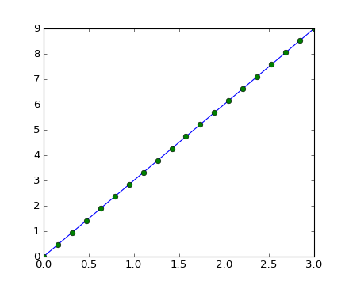{kind=link}
2D arrays (such as images)
>>> image = np.random.rand(30, 30)
>>> plt.imshow(image, cmap=plt.cm.gray)
>>> plt.colorbar()
>>> plt.show()
[source code, hires.png, pdf]
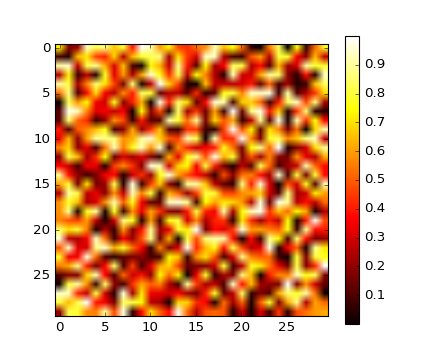{kind=link}
See also
More in the matplotlib chapter
3D plotting
For 3D visualization, we can use another package: Mayavi. A quick example: start with relaunching iPython with these options: ipython -pylab -wthread (or ipython –pylab=wx in IPython >= 0.10).

In [59]: from enthought.mayavi import mlab
In [60]: mlab.figure()
Out[60]: <enthought.mayavi.core.scene.Scene object at 0xcb2677c>
In [61]: mlab.surf(image)
Out[61]: <enthought.mayavi.modules.surface.Surface object at 0xd0862fc>
In [62]: mlab.axes()
Out[62]: <enthought.mayavi.modules.axes.Axes object at 0xd07892c>
The mayavi/mlab window that opens is interactive : by clicking on the left mouse button you can rotate the image, zoom with the mouse wheel, etc.
For more information on Mayavi : http://github.enthought.com/mayavi/mayavi
See also
More in the Mayavi chapter
Indexing and slicing¶
The items of an array can be accessed and assigned to the same way as other Python sequences (e.g. lists)
>>> a = np.arange(10)
>>> a
array([0, 1, 2, 3, 4, 5, 6, 7, 8, 9])
>>> a[0], a[2], a[-1]
(0, 2, 9)
Warning
Indices begin at 0, like other Python sequences (and C/C++). In contrast, in Fortran or Matlab, indices begin at 1.
For multidimensional arrays, indexes are tuples of integers:
>>> a = np.diag(np.arange(3))
>>> a
array([[0, 0, 0],
[0, 1, 0],
[0, 0, 2]])
>>> a[1, 1]
1
>>> a[2, 1] = 10 # third line, second column
>>> a
array([[ 0, 0, 0],
[ 0, 1, 0],
[ 0, 10, 2]])
>>> a[1]
array([0, 1, 0])
Note that:
- In 2D, the first dimension corresponds to rows, the second to columns.
- for multidimensional a, a[0] is interpreted by taking all elements in the unspecified dimensions.
Slicing Arrays, like other Python sequences can also be sliced:
>>> a = np.arange(10)
>>> a
array([0, 1, 2, 3, 4, 5, 6, 7, 8, 9])
>>> a[2:9:3] # [start:end:step]
array([2, 5, 8])
Note that the last index is not included!:
>>> a[:4]
array([0, 1, 2, 3])
All three slice components are not required: by default, start is 0, end is the last and step is 1:
>>> a[1:3]
array([1, 2])
>>> a[::2]
array([0, 2, 4, 6, 8])
>>> a[3:]
array([3, 4, 5, 6, 7, 8, 9])
A small illustrated summary of Numpy indexing and slicing...

Copies and views¶
A slicing operation creates a view on the original array, which is just a way of accessing array data. Thus the original array is not copied in memory.
When modifying the view, the original array is modified as well:
>>> a = np.arange(10)
>>> a
array([0, 1, 2, 3, 4, 5, 6, 7, 8, 9])
>>> b = a[::2]; b
array([0, 2, 4, 6, 8])
>>> b[0] = 12
>>> b
array([12, 2, 4, 6, 8])
>>> a # (!)
array([12, 1, 2, 3, 4, 5, 6, 7, 8, 9])
>>> a = np.arange(10)
>>> b = a[::2].copy() # force a copy
>>> b[0] = 12
>>> a
array([0, 1, 2, 3, 4, 5, 6, 7, 8, 9])
This behavior can be surprising at first sight... but it allows to save both memory and time.
Warning
The transpose is a view
As a result, a matrix cannot be made symmetric in-place:
>>> a = np.ones((100, 100))
>>> a += a.T
>>> a
array([[ 2., 2., 2., ..., 2., 2., 2.],
[ 2., 2., 2., ..., 2., 2., 2.],
[ 2., 2., 2., ..., 2., 2., 2.],
...,
[ 3., 3., 3., ..., 2., 2., 2.],
[ 3., 3., 3., ..., 2., 2., 2.],
[ 3., 3., 3., ..., 2., 2., 2.]])
Worked example: Prime number sieve

Compute prime numbers in 0–99, with a sieve
Construct a shape (100,) boolean array is_prime, filled with True in the beginning:
>>> is_prime = np.ones((100,), dtype=bool)
Cross out 0 and 1 which are not primes:
>>> is_prime[:2] = 0
For each integer j starting from 2, cross out its higher multiples:
>>> N_max = int(np.sqrt(len(is_prime))) >>> for j in range(2, N_max): ... is_prime[2*j::j] = False
Skim through help(np.nonzero), and print the prime numbers
Follow-up:
- Move the above code into a script file named prime_sieve.py
- Run it to check it works
- Convert the simple sieve to the sieve of Eratosthenes:
- Skip j which are already known to not be primes
- The first number to cross out is

Fancy indexing¶
Numpy arrays can be indexed with slices, but also with boolean or integer arrays (masks). This method is called fancy indexing. It creates copies not view.
Using boolean masks¶
>>> np.random.seed(3)
>>> a = np.random.random_integers(0, 20, 15)
>>> a
array([10, 3, 8, 0, 19, 10, 11, 9, 10, 6, 0, 20, 12, 7, 14])
>>> (a % 3 == 0)
array([False, True, False, True, False, False, False, True, False,
True, True, False, True, False, False], dtype=bool)
>>> mask = (a % 3 == 0)
>>> extract_from_a = a[mask] # or, a[a%3==0]
>>> extract_from_a # extract a sub-array with the mask
array([ 3, 0, 9, 6, 0, 12])
Indexing with a mask can be very useful to assign a new value to a sub-array:
>>> a[a % 3 == 0] = -1
>>> a
array([10, -1, 8, -1, 19, 10, 11, -1, 10, -1, -1, 20, -1, 7, 14])
Indexing with an array of integers¶
>>> a = np.arange(10)
>>> a[::2] += 3 # to avoid having always the same np.arange(10)...
>>> a
array([ 3, 1, 5, 3, 7, 5, 9, 7, 11, 9])
>>> a[[2, 5, 1, 8]] # or, a[np.array([2, 5, 1, 8])]
array([ 5, 5, 1, 11])
Indexing can be done with an array of integers, where the same index is repeated several time:
>>> a[[2, 3, 2, 4, 2]] # note: [2, 3, 2, 4, 2] is a Python list
array([5, 3, 5, 7, 5])
New values can be assigned with this kind of indexing:
>>> a[[9, 7]] = -10
>>> a
array([ 3, 1, 5, 3, 7, 5, 9, -10, 11, -10])
>>> a[[2, 3, 2, 4, 2]] += 1
>>> a
array([ 3, 1, 6, 4, 8, 5, 9, -10, 11, -10])
When a new array is created by indexing with an array of integers, the new array has the same shape than the array of integers:
>>> a = np.arange(10)
>>> idx = np.array([[3, 4], [9, 7]])
>>> a[idx]
array([[3, 4],
[9, 7]])
>>> b = np.arange(10)
>>> a = np.arange(12).reshape(3, 4)
>>> a
array([[ 0, 1, 2, 3],
[ 4, 5, 6, 7],
[ 8, 9, 10, 11]])
>>> i = np.array([0, 1, 1, 2])
>>> j = np.array([2, 1, 3, 3])
>>> a[i, j]
array([ 2, 5, 7, 11])
>>> i = np.array([[0, 1], [1, 2]])
>>> j = np.array([[2, 1], [3, 3]])
>>> i
array([[0, 1],
[1, 2]])
>>> j
array([[2, 1],
[3, 3]])
>>> a[i, j]
array([[ 2, 5],
[ 7, 11]])

We can even use fancy indexing and broadcasting at the same time:
>>> a = np.arange(12).reshape(3,4)
>>> a
array([[ 0, 1, 2, 3],
[ 4, 5, 6, 7],
[ 8, 9, 10, 11]])
>>> i = np.array([[0, 1], [1, 2]])
>>> a[i, 2] # same as a[i, 2*np.ones((2,2), dtype=int)]
array([[ 2, 6],
[ 6, 10]])
Numerical operations on arrays¶
Elementwise operations¶
With scalars:
>>> a = np.array([1, 2, 3, 4])
>>> a + 1
array([2, 3, 4, 5])
>>> 2**a
array([ 2, 4, 8, 16])
All arithmetic operates elementwise:
>>> b = np.ones(4) + 1
>>> a - b
array([-1., 0., 1., 2.])
>>> a * b
array([ 2., 4., 6., 8.])
>>> j = np.arange(5)
>>> 2**(j + 1) - j
array([ 2, 3, 6, 13, 28])
Warning
Array multiplication is not matrix multiplication:
>>> c = np.ones((3, 3))
>>> c * c # NOT matrix multiplication!
array([[ 1., 1., 1.],
[ 1., 1., 1.],
[ 1., 1., 1.]])
Note
Matrix multiplication:
>>> c.dot(c)
array([[ 3., 3., 3.],
[ 3., 3., 3.],
[ 3., 3., 3.]])
Comparisons:
>>> a = np.array([1, 2, 3, 4])
>>> b = np.array([4, 2, 2, 4])
>>> a == b
array([False, True, False, True], dtype=bool)
>>> a > b
array([False, False, True, False], dtype=bool)
Logical operations:
>>> a = np.array([1, 1, 0, 0], dtype=bool)
>>> b = np.array([1, 0, 1, 0], dtype=bool)
>>> np.logical_or(a, b)
array([ True, True, True, False], dtype=bool)
>>> np.logical_and(a, b)
array([ True, False, False, False], dtype=bool)
Note
For arrays: “np.logical_and” and “np.logical_or” for logical operations, not “and” and “or”.
Shape mismatches:
>>> a
array([1, 2, 3, 4])
>>> a + np.array([1, 2])
Traceback (most recent call last):
File "<stdin>", line 1, in <module>
ValueError: shape mismatch: objects cannot be broadcast to a single shape
‘Broadcast’? We’ll return to that later.
Transposition:
>>> a = np.triu(np.ones((3, 3)), 1) # see help(np.triu)
>>> a
array([[ 0., 1., 1.],
[ 0., 0., 1.],
[ 0., 0., 0.]])
>>> a.T
array([[ 0., 0., 0.],
[ 1., 0., 0.],
[ 1., 1., 0.]])
Note
Linear algebra
The sub-module np.linalg implements basic linear algebra, such as eigenvalue decomposition, solving linear systems... However, it is not garantied to be compiled using efficient routines, and thus we recommend to use scipy.linalg, as detailed in section Linear algebra operations: scipy.linalg
Exercice
Generate arrays [2**0, 2**1, 2**2, 2**3, 2**4] and a_j = 2^(3*j) - j
Basic reductions¶
Computing sums:
>>> x = np.array([1, 2, 3, 4])
>>> np.sum(x)
10
>>> x.sum()
10

Sum by rows and by columns:
>>> x = np.array([[1, 1], [2, 2]])
>>> x
array([[1, 1],
[2, 2]])
>>> x.sum(axis=0) # columns (first dimension)
array([3, 3])
>>> x[:, 0].sum(), x[:, 1].sum()
(3, 3)
>>> x.sum(axis=1) # rows (second dimension)
array([2, 4])
>>> x[0, :].sum(), x[1, :].sum()
(2, 4)
Same idea in higher dimensions:
>>> x = np.random.rand(2, 2, 2)
>>> x.sum(axis=2)[0, 1]
1.1600112273698793
>>> x[0, 1, :].sum()
1.1600112273698793
Other reductions — works the same way (and take axis=)
Statistics:
>>> x = np.array([1, 2, 3, 1]) >>> y = np.array([[1, 2, 3], [5, 6, 1]]) >>> x.mean() 1.75 >>> np.median(x) 1.5 >>> np.median(y, axis=-1) # last axis array([ 2., 5.])
>>> x.std() # full population standard dev. 0.82915619758884995
Extrema:
>>> x = np.array([1, 3, 2]) >>> x.min() 1 >>> x.max() 3
>>> x.argmin() # index of minimum 0 >>> x.argmax() # index of maximum 1
Logical operations:
>>> np.all([True, True, False]) False >>> np.any([True, True, False]) True
Note
Can be used for array comparisons:
>>> a = np.zeros((100, 100)) >>> np.any(a != 0) False >>> np.all(a == a) True
>>> a = np.array([1, 2, 3, 2]) >>> b = np.array([2, 2, 3, 2]) >>> c = np.array([6, 4, 4, 5]) >>> ((a <= b) & (b <= c)).all() True
... and many more (best to learn as you go).
Example: data statistics
Data in populations.txt describes the populations of hares and lynxes (and carrots) in northern Canada during 20 years.
We can first plot the data:
>>> data = np.loadtxt('../../data/populations.txt')
>>> year, hares, lynxes, carrots = data.T # trick: columns to variables
>>> plt.axes([0.2, 0.1, 0.5, 0.8])
>>> plt.plot(year, hares, year, lynxes, year, carrots)
>>> plt.legend(('Hare', 'Lynx', 'Carrot'), loc=(1.05, 0.5))
>>> plt.show()
[source code, hires.png, pdf]
{kind=link}

The mean populations over time:
>>> populations = data[:, 1:]
>>> populations.mean(axis=0)
array([ 34080.95238095, 20166.66666667, 42400. ])
The sample standard deviations:
>>> populations.std(axis=0)
array([ 20897.90645809, 16254.59153691, 3322.50622558])
Which species has the highest population each year?
>>> np.argmax(populations, axis=1)
array([2, 2, 0, 0, 1, 1, 2, 2, 2, 2, 2, 2, 0, 0, 0, 1, 2, 2, 2, 2, 2])
Example: diffusion simulation using a random walk algorithm

What is the typical distance from the origin of a random walker after t left or right jumps?

>>> n_stories = 1000 # number of walkers
>>> t_max = 200 # time during which we follow the walker
We randomly choose all the steps 1 or -1 of the walk
>>> t = np.arange(t_max)
>>> steps = 2 * np.random.random_integers(0, 1, (n_stories, t_max)) - 1
>>> np.unique(steps) # Verification: all steps are 1 or -1
array([-1, 1])
We build the walks by summing steps along the time
>>> positions = np.cumsum(steps, axis=1) # axis = 1: dimension of time
>>> sq_distance = positions**2
We get the mean in the axis of the stories
>>> mean_sq_distance = np.mean(sq_distance, axis=0)
Plot the results:
>>> plt.figure(figsize=(4, 3))
>>> plt.plot(t, np.sqrt(mean_sq_distance), 'g.', t, np.sqrt(t), 'y-')
>>> plt.xlabel(r"$t$")
>>> plt.ylabel(r"$\sqrt{\langle (\delta x)^2 \rangle}$")
>>> plt.show()
[source code, hires.png, pdf]
{kind=link}

The RMS distance grows as the square root of the time!
Broadcasting¶
Basic operations on numpy arrays (addition, etc.) are elementwise
This works on arrays of the same size.
Nevertheless, It’s also possible to do operations on arrays of differentsizes if Numpy can transform these arrays so that they all havethe same size: this conversion is called broadcasting.
The image below gives an example of broadcasting:

Let’s verify:
>>> a = np.tile(np.arange(0, 40, 10), (3, 1)).T
>>> a
array([[ 0, 0, 0],
[10, 10, 10],
[20, 20, 20],
[30, 30, 30]])
>>> b = np.array([0, 1, 2])
>>> a + b
array([[ 0, 1, 2],
[10, 11, 12],
[20, 21, 22],
[30, 31, 32]])
An useful trick:
>>> a = np.arange(0, 40, 10)
>>> a.shape
(4,)
>>> a = a[:, np.newaxis] # adds a new axis -> 2D array
>>> a.shape
(4, 1)
>>> a
array([[ 0],
[10],
[20],
[30]])
>>> a + b
array([[ 0, 1, 2],
[10, 11, 12],
[20, 21, 22],
[30, 31, 32]])
We have already used broadcasting without knowing it!:
>>> a = np.ones((4, 5))
>>> a[0] = 2 # we assign an array of dimension 0 to an array of dimension 1
array([[ 2., 2., 2., 2., 2.],
[ 1., 1., 1., 1., 1.],
[ 1., 1., 1., 1., 1.],
[ 1., 1., 1., 1., 1.]])
Broadcasting seems a bit magical, but it is actually quite natural to use it when we want to solve a problem whose output data is an array with more dimensions than input data.
Example
Let’s construct an array of distances (in miles) between cities of Route 66: Chicago, Springfield, Saint-Louis, Tulsa, Oklahoma City, Amarillo, Santa Fe, Albuquerque, Flagstaff and Los Angeles.
>>> mileposts = np.array([0, 198, 303, 736, 871, 1175, 1475, 1544,
... 1913, 2448])
>>> distance_array = np.abs(mileposts - mileposts[:, np.newaxis])
>>> distance_array
array([[ 0, 198, 303, 736, 871, 1175, 1475, 1544, 1913, 2448],
[ 198, 0, 105, 538, 673, 977, 1277, 1346, 1715, 2250],
[ 303, 105, 0, 433, 568, 872, 1172, 1241, 1610, 2145],
[ 736, 538, 433, 0, 135, 439, 739, 808, 1177, 1712],
[ 871, 673, 568, 135, 0, 304, 604, 673, 1042, 1577],
[1175, 977, 872, 439, 304, 0, 300, 369, 738, 1273],
[1475, 1277, 1172, 739, 604, 300, 0, 69, 438, 973],
[1544, 1346, 1241, 808, 673, 369, 69, 0, 369, 904],
[1913, 1715, 1610, 1177, 1042, 738, 438, 369, 0, 535],
[2448, 2250, 2145, 1712, 1577, 1273, 973, 904, 535, 0]])

Good practices
Explicit variable names (no need of a comment to explain what is in the variable)
Style: spaces after commas, around =, etc.
A certain number of rules for writing “beautiful” code (and, more importantly, using the same conventions as everybody else!) are given in the Style Guide for Python Code and the Docstring Conventions page (to manage help strings).
Except some rare cases, variable names and comments in English.
A lot of grid-based or network-based problems can also use broadcasting. For instance, if we want to compute the distance from the origin of points on a 10x10 grid, we can do:
>>> x, y = np.arange(5), np.arange(5) >>> distance = np.sqrt(x ** 2 + y[:, np.newaxis] ** 2) >>> distance array([[ 0. , 1. , 2. , 3. , 4. ], [ 1. , 1.41421356, 2.23606798, 3.16227766, 4.12310563], [ 2. , 2.23606798, 2.82842712, 3.60555128, 4.47213595], [ 3. , 3.16227766, 3.60555128, 4.24264069, 5. ], [ 4. , 4.12310563, 4.47213595, 5. , 5.65685425]])Or in color:
>>> plt.pcolor(distance) >>> plt.colorbar() >>> plt.axis('equal') >>> plt.show() # <-- again, not needed in interactive Python
[source code, hires.png, pdf]
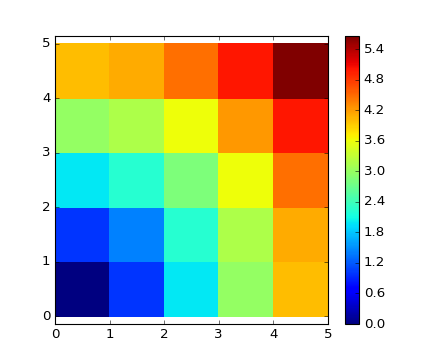{kind=link}
Remark : the numpy.ogrid function allows to directly create vectors x and y of the previous example, with two “significant dimensions”:
>>> x, y = np.ogrid[0:5, 0:5]
>>> x, y
(array([[0],
[1],
[2],
[3],
[4]]), array([[0, 1, 2, 3, 4]]))
>>> x.shape, y.shape
((5, 1), (1, 5))
>>> distance = np.sqrt(x ** 2 + y ** 2)
So, np.ogrid is very useful as soon as we have to handle computations on a grid. On the other hand, np.mgrid directly provides matrices full of indices for cases where we can’t (or don’t want to) benefit from broadcasting:
>>> x, y = np.mgrid[0:4, 0:4]
>>> x
array([[0, 0, 0, 0],
[1, 1, 1, 1],
[2, 2, 2, 2],
[3, 3, 3, 3]])
>>> y
array([[0, 1, 2, 3],
[0, 1, 2, 3],
[0, 1, 2, 3],
[0, 1, 2, 3]])
However, in practice, this is rarely needed!
Array shape manipulation¶
Flattening
>>> a = np.array([[1, 2, 3], [4, 5, 6]])
>>> a.ravel()
array([1, 2, 3, 4, 5, 6])
>>> a.T
array([[1, 4],
[2, 5],
[3, 6]])
>>> a.T.ravel()
array([1, 4, 2, 5, 3, 6])
Higher dimensions: last dimensions ravel out “first”.
Reshaping
The inverse operation to flattening:
>>> a.shape
(2, 3)
>>> b = a.ravel()
>>> b.reshape((2, 3))
array([[1, 2, 3],
[4, 5, 6]])
Creating an array with a different shape, from another array:
>>> a = np.arange(36)
>>> b = a.reshape((6, 6))
>>> b
array([[ 0, 1, 2, 3, 4, 5],
[ 6, 7, 8, 9, 10, 11],
[12, 13, 14, 15, 16, 17],
[18, 19, 20, 21, 22, 23],
[24, 25, 26, 27, 28, 29],
[30, 31, 32, 33, 34, 35]])
Or,
>>> b = a.reshape((6, -1)) # unspecified (-1) value is inferred
Views and copies
ndarray.reshape may return a view (cf help(np.reshape))), not a copy:
>>> b[0,0] = 99
>>> a
array([99, 1, 2, 3, 4, 5, 6, 7, 8, 9, 10, 11, 12, 13, 14, 15, 16,
17, 18, 19, 20, 21, 22, 23, 24, 25, 26, 27, 28, 29, 30, 31, 32, 33,
34, 35])
Beware!
>>> a = np.zeros((3,2))
>>> b = a.T.reshape(3*2)
>>> b[0] = 9
>>> a
array([[ 0., 0.],
[ 0., 0.],
[ 0., 0.]])
To understand, see “Under the hood” below.
Dimension shuffling
>>> a = np.arange(4*3*2).reshape(4, 3, 2)
>>> a.shape
(4, 3, 2)
>>> a[0,2,1]
5
>>> b = a.transpose(1, 2, 0)
>>> b.shape
(3, 2, 4)
>>> b[2,1,0]
5
Also creates a view:
>>> b[2,1,0] = -1
>>> a[0,2,1]
-1
Resizing
Size of an array can be changed with ndarray.resize:
>>> a = np.arange(4)
>>> a.resize((8,))
>>> a
array([0, 1, 2, 3, 0, 0, 0, 0])
However, it must not be referred to somewhere else:
>>> b = a
>>> a.resize((4,))
...
ValueError: cannot resize an array references or is referenced
by another array in this way. Use the resize function
Some examples of real-world use cases
Case 2.a: Calling (legacy) Fortran code
Shape-preserving functions with elementwise non-Python routines. For instance, Fortran
! 2_a_fortran_module.f90
subroutine some_function(n, a, b)
integer :: n
double precision, dimension(n), intent(in) :: a
double precision, dimension(n), intent(out) :: b
b = a + 1
end subroutine some_function
f2py -c -m fortran_module 2_a_fortran_module.f90
import numpy as np
import fortran_module
def some_function(input):
"""
Call a Fortran routine, and preserve input shape
"""
input = np.asarray(input)
# fortran_module.some_function() takes 1-D arrays!
output = fortran_module.some_function(input.ravel())
return output.reshape(input.shape)
print some_function(np.array([1, 2, 3]))
print some_function(np.array([[1, 2], [3, 4]]))
# ->
# [ 2. 3. 4.]
# [[ 2. 3.]
# [ 4. 5.]]
Case 2.b: Block matrices and vectors (and tensors)
Vector space: quantum level 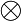 spin

In short: for block matrices and vectors, it can be useful to preserve the block structure.
In Numpy:
>>> psi = np.zeros((2, 2)) # dimensions: level, spin
>>> psi[0,1] # <-- psi_{1,downarrow}
Linear operators on such block vectors have similar block structure:
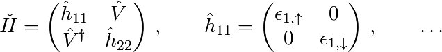
>>> H = np.zeros((2, 2, 2, 2)) # dimensions: level1, level2, spin1, spin2
>>> h_11 = H[0,0,:,:]
>>> V = H[0,1]
Doing the matrix product: get rid of the block structure, do the 4x4 matrix product, then put it back
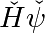
>>> def mdot(operator, psi):
... return operator.transpose(0, 2, 1, 3).reshape(4, 4).dot(
... psi.reshape(4)).reshape(2, 2)
I.e., reorder dimensions first to level1, spin1, level2, spin2 and then reshape => correct matrix product.
Sorting data¶
Sorting along an axis:
>>> a = np.array([[4, 3, 5], [1, 2, 1]])
>>> b = np.sort(a, axis=1)
>>> b
array([[3, 4, 5],
[1, 1, 2]])
Note
Sorts each row separately!
In-place sort:
>>> a.sort(axis=1)
>>> a
array([[3, 4, 5],
[1, 1, 2]])
Sorting with fancy indexing:
>>> a = np.array([4, 3, 1, 2])
>>> j = np.argsort(a)
array([2, 3, 1, 0])
>>> a[j]
array([1, 2, 3, 4])
Finding minima and maxima:
>>> a = np.array([4, 3, 1, 2])
>>> j_max = np.argmax(a)
>>> j_min = np.argmin(a)
>>> j_max, j_min
(0, 2)
Some excercices¶
Worked example: Framing Lena
Let’s do some manipulations on numpy arrays by starting with the famous image of Lena (http://www.cs.cmu.edu/~chuck/lennapg/). scipy provides a 2D array of this image with the scipy.lena function:
>>> from scipy import misc
>>> lena = misc.lena()
Here are a few images we will be able to obtain with our manipulations: use different colormaps, crop the image, change some parts of the image.

Let’s use the imshow function of pylab to display the image.
In [3]: import pylab as plt In [4]: lena = misc.lena() In [5]: plt.imshow(lena)
Lena is then displayed in false colors. A colormap must be specified for her to be displayed in grey.
In [6]: plt.imshow(lena, cmap=plt.cm.gray)
Create an array of the image with a narrower centering : for example, remove 30 pixels from all the borders of the image. To check the result, display this new array with imshow.
In [9]: crop_lena = lena[30:-30,30:-30]
We will now frame Lena’s face with a black locket. For this, we need to create a mask corresponding to the pixels we want to be black. The mask is defined by this condition (y-256)**2 + (x-256)**2
In [15]: y, x = np.ogrid[0:512,0:512] # x and y indices of pixels In [16]: y.shape, x.shape Out[16]: ((512, 1), (1, 512)) In [17]: centerx, centery = (256, 256) # center of the image In [18]: mask = ((y - centery)**2 + (x - centerx)**2) > 230**2 # circle
then we assign the value 0 to the pixels of the image corresponding to the mask. The syntax is extremely simple and intuitive:
In [19]: lena[mask] = 0 In [20]: plt.imshow(lena) Out[20]: <matplotlib.image.AxesImage object at 0xa36534c>
Follow-up: copy all instructions of this exercise in a script called lena_locket.py then execute this script in IPython with %run lena_locket.py.
Change the circle to an ellipsoid.
Exercise: Array manipulations
Form the 2-D array (without typing it in explicitly):
1 6 11 2 7 12 3 8 13 4 9 14 5 10 15
and generate a new array containing its 2nd and 4th rows.
Divide each column of the array:
>>> a = np.arange(25).reshape(5, 5)
elementwise with the array b = np.array([1., 5, 10, 15, 20]). (Hint: np.newaxis).
Harder one: Generate a 10 x 3 array of random numbers (in range [0,1]). For each row, pick the number closest to 0.5.
- Use abs and argsort to find the column j closest for each row.
- Use fancy indexing to extract the numbers. (Hint: a[i,j] – the array i must contain the row numbers corresponding to stuff in j.)
Exercise: Data statistics
The data in populations.txt:: describes the populations of hares and lynxes (and carrots) in northern Canada during 20 years:
>>> data = np.loadtxt('../../data/populations.txt')
>>> year, hares, lynxes, carrots = data.T # trick: columns to variables
>>> plt.axes([0.2, 0.1, 0.5, 0.8])
>>> plt.plot(year, hares, year, lynxes, year, carrots)
>>> plt.legend(('Hare', 'Lynx', 'Carrot'), loc=(1.05, 0.5))
>>> plt.show()
[source code, hires.png, pdf]
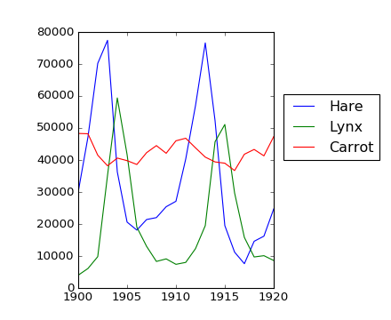{kind=link}
Computes and print, based on the data in populations.txt...
- The mean and std of the populations of each species for the years in the period.
- Which year each species had the largest population.
- Which species has the largest population for each year. (Hint: argsort & fancy indexing of np.array(['H', 'L', 'C']))
- Which years any of the populations is above 50000. (Hint: comparisons and np.any)
- The top 2 years for each species when they had the lowest populations. (Hint: argsort, fancy indexing)
- Compare (plot) the change in hare population (see help(np.gradient)) and the number of lynxes. Check correlation (see help(np.corrcoef)).
... all without for-loops.
Exercise: Crude integral approximations
Write a function f(a, b, c) that returns 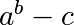. Form a 24x12x6 array containing its values in parameter ranges [0,1] x [0,1] x [0,1].
Approximate the 3-d integral
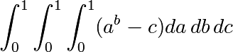
over this volume with the mean. The exact result is:  — what is your relative error?
— what is your relative error?
(Hints: use elementwise operations and broadcasting. You can make np.ogrid give a number of points in given range with np.ogrid[0:1:20j].)
Reminder Python functions:
def f(a, b, c):
return some_result
Exercise: Mandelbrot set
Write a script that computes the Mandelbrot fractal. The Mandelbrot iteration:
N_max = 50 some_threshold = 50 c = x + 1j*y for j in xrange(N_max): z = z**2 + cPoint (x, y) belongs to the Mandelbrot set if 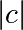 < some_threshold.
Do this computation by:
Construct a grid of c = x + 1j*y values in range [-2, 1] x [-1.5, 1.5]
Do the iteration
Form the 2-d boolean mask indicating which points are in the set
Save the result to an image with:
>>> import matplotlib.pyplot as plt >>> plt.imshow(mask.T, extent=[-2, 1, -1.5, 1.5]) >>> plt.gray() >>> plt.savefig('mandelbrot.png')
Exercise: Markov chain

Markov chain transition matrix P, and probability distribution on the states p:
- 0 <= P[i,j] <= 1: probability to go from state i to state j
- Transition rule: 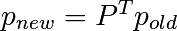
- all(sum(P, axis=1) == 1), p.sum() == 1: normalization
Write a script that works with 5 states, and:
- Constructs a random matrix, and normalizes each row so that it is a transition matrix.
- Starts from a random (normalized) probability distribution p and takes 50 steps => p_50
- Computes the stationary distribution: the eigenvector of P.T with eigenvalue 1 (numerically: closest to 1) => p_stationary
Remember to normalize the eigenvector — I didn’t...
- Checks if p_50 and p_stationary are equal to tolerance 1e-5
Toolbox: np.random.rand, .dot(), np.linalg.eig, reductions, abs(), argmin, comparisons, all, np.linalg.norm, etc.
Summary¶
What do you need to know to get started?
Know how to create arrays : array, arange, ones, zeros.
Know the shape of the array with array.shape, then use slicing to obtain different views of the array: array[::2], etc. Adjust the shape of the array using reshape or flatten it with ravel.
Obtain a subset of the elements of an array and/or modify their values with masks:
>>> a[a < 0] = 0
Know miscellaneous operations on arrays, such as finding the mean or max (array.max(), array.mean()). No need to retain everything, but have the reflex to search in the documentation (online docs, help(), lookfor())!!
For advanced use: master the indexing with arrays of integers, as well as broadcasting. Know more Numpy functions to handle various array operations.
Advanced operations¶
Fourier transforms¶
Numpy contains 1-D, 2-D, and N-D fast discrete Fourier transform routines, which compute:
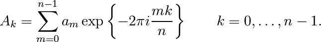
Full details of what for you can use such standard routines is beyond this tutorial. Neverheless, there they are, if you need them:
>>> a = np.exp(2j*np.pi*np.arange(10))
>>> fa = np.fft.fft(a)
>>> np.set_printoptions(suppress=True) # print small number as 0
>>> fa
array([ 10.-0.j, 0.+0.j, 0.+0.j, 0.+0.j, 0.+0.j, 0.+0.j,
-0.+0.j, -0.+0.j, -0.+0.j, -0.+0.j])
>>> a = np.exp(2j*np.pi*np.arange(3))
>>> b = a[:,np.newaxis] + a[np.newaxis,:]
>>> np.fft.fftn(b)
array([[ 18.-0.j, 0.+0.j, -0.+0.j],
[ 0.+0.j, 0.+0.j, 0.+0.j],
[ -0.+0.j, 0.+0.j, 0.+0.j]])
See help(np.fft) and help(np.fft.fft) for more. These functions in general take the axes argument, and you can additionally specify padding etc.
Worked example: Crude periodicity finding
[source code, hires.png, pdf]
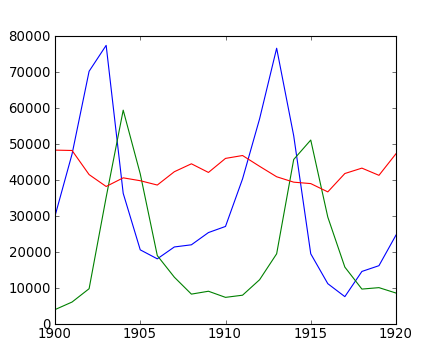{kind=link}
[source code, hires.png, pdf]
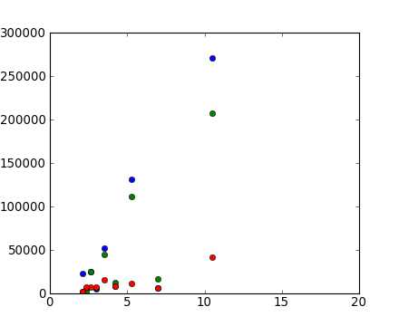{kind=link}
Worked example: Gaussian image blur
Convolution:
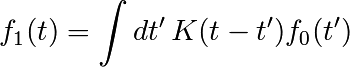
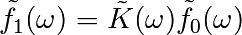
[source code, hires.png, pdf]
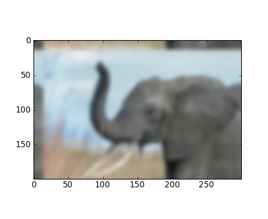{kind=link}
Polynomials¶
Numpy also contains polynomials in different bases:
For example, 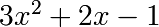
>>> p = np.poly1d([3, 2, -1])
>>> p(0)
-1
>>> p.roots
array([-1. , 0.33333333])
>>> p.order
2
>>> x = np.linspace(0, 1, 20)
>>> y = np.cos(x) + 0.3*np.random.rand(20)
>>> p = np.poly1d(np.polyfit(x, y, 3))
>>> t = np.linspace(0, 1, 200)
>>> plt.plot(x, y, 'o', t, p(t), '-')
>>> plt.show()
[source code, hires.png, pdf]
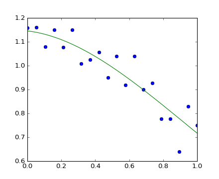{kind=link}
See http://docs.scipy.org/doc/numpy/reference/routines.polynomials.poly1d.html for more.
More polynomials (with more bases)
Numpy also has a more sophisticated polynomial interface, which supports e.g. the Chebyshev basis.
>>> p = np.polynomial.Polynomial([-1, 2, 3]) # coefs in different order!
>>> p(0)
-1.0
>>> p.roots()
array([-1. , 0.33333333])
>>> p.order
2
Example using polynomials in Chebyshev basis, for polynomials in range [-1, 1]:
>>> x = np.linspace(-1, 1, 2000)
>>> y = np.cos(x) + 0.3*np.random.rand(2000)
>>> p = np.polynomial.Chebyshev.fit(x, y, 90)
>>> t = np.linspace(-1, 1, 200)
>>> plt.plot(x, y, 'r.')
>>> plt.plot(t, p(t), 'k-', lw=3)
>>> plt.show()
[source code, hires.png, pdf]
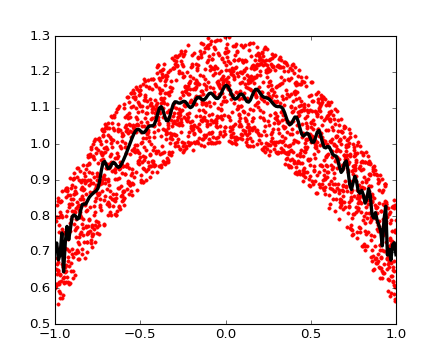{kind=link}
The Chebyshev polynomials have some advantages in interpolation.
Summary & Exercises¶
- There is a number of data types with different precisions. In some special cases you may need to care about this.
- Structured arrays contain data of a composite type. Lumping pieces of data together this way has various possible uses.
- Fourier transform routines are under np.fft
- Masked arrays can be used for missing data
- Polynomials are available in various bases
Loading data files¶
Text files¶
Example: populations.txt:
1900 30e3 4e3 51300
1901 47.2e3 6.1e3 48200
1902 70.2e3 9.8e3 41500
...
>>> data = np.loadtxt('populations.txt') # if in current directory
>>> data
array([[ 1900., 30000., 4000., 51300.],
[ 1901., 47200., 6100., 48200.],
[ 1902., 70200., 9800., 41500.],
...
>>> np.savetxt('pop2.txt', data)
>>> data2 = np.loadtxt('pop2.txt')
Note
If you have a complicated text file, what you can try are:
- np.genfromtxt
- Using Python’s I/O functions and e.g. regexps for parsing (Python is quite well suited for this)
Navigating the filesystem with Ipython
In [1]: pwd # show current directory
'/home/user/stuff/2011-numpy-tutorial'
In [2]: cd ex
'/home/user/stuff/2011-numpy-tutorial/ex'
In [3]: ls
populations.txt species.txt
Images¶
Using Matplotlib:
>>> img = plt.imread('../../data/elephant.png')
>>> img.shape, img.dtype
((200, 300, 3), dtype('float32'))
>>> plt.imshow(img)
>>> plt.savefig('plot.png')
>>> plt.show()
>>> plt.imsave('red_elephant', img[:,:,0], cmap=plt.cm.gray)
This saved only one channel (of RGB):
>>> plt.imshow(plt.imread('red_elephant.png'))
>>> plt.show()
Other libraries:
>>> from scipy.misc import imsave
>>> imsave('tiny_elephant.png', img[::6,::6])
>>> plt.imshow(plt.imread('tiny_elephant.png'), interpolation='nearest')
>>> plt.show()
[source code, hires.png, pdf]
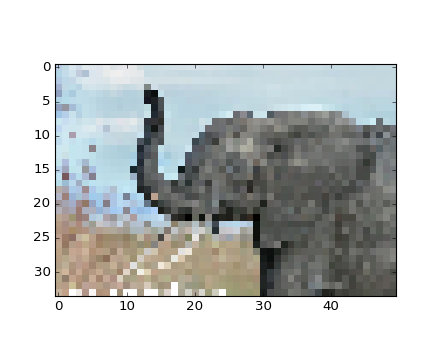{kind=link}
Numpy’s own format¶
Numpy has its own binary format, not portable but with efficient I/O:
>>> np.save('pop.npy', data)
>>> data3 = np.load('pop.npy')
Well-known (& more obscure) file formats¶
- HDF5: h5py, PyTables
- NetCDF: scipy.io.netcdf_file, netcdf4-python, ...
- Matlab: scipy.io.loadmat, scipy.io.savemat
- MatrixMarket: scipy.io.mmread, scipy.io.mmread
... if somebody uses it, there’s probably also a Python library for it.
Exercise: Text data files
Write a Python script that loads data from populations.txt:: and drop the last column and the first 5 rows. Save the smaller dataset to pop2.txt.
More elaborate arrays¶
More data types¶
Casting
“Bigger” type wins in mixed-type operations:
>>> np.array([1, 2, 3]) + 1.5
array([ 2.5, 3.5, 4.5])
Assignment never changes the type!
>>> a = np.array([1, 2, 3])
>>> a.dtype
dtype('int64')
>>> a[0] = 1.9 # <-- float is truncated to integer
>>> a
array([1, 2, 3])
Forced casts:
>>> a = np.array([1.7, 1.2, 1.6])
>>> b = a.astype(int) # <-- truncates to integer
>>> b
array([1, 1, 1])
Rounding:
>>> a = np.array([1.7, 1.2, 1.6])
>>> b = np.around(a)
>>> b # still floating-point
array([ 2., 1., 2.])
>>> c = np.around(a).astype(int)
>>> c
array([2, 1, 2])
Different data type sizes
Integers (signed):
| int8 | 8 bits |
| int16 | 16 bits |
| int32 | 32 bits (same as int on 32-bit platform) |
| int64 | 64 bits (same as int on 64-bit platform) |
>>> np.array([1], dtype=int).dtype
dtype('int64')
>>> np.iinfo(np.int32).max, 2**31 - 1
(2147483647, 2147483647)
>>> np.iinfo(np.int64).max, 2**63 - 1
(9223372036854775807, 9223372036854775807L)
Unsigned integers:
| uint8 | 8 bits |
| uint16 | 16 bits |
| uint32 | 32 bits |
| uint64 | 64 bits |
>>> np.iinfo(np.uint32).max, 2**32 - 1
(2147483647, 2147483647)
>>> np.iinfo(np.uint64).max, 2**64 - 1
(9223372036854775807, 9223372036854775807L)
Floating-point numbers:
| float16 | 16 bits |
| float32 | 32 bits |
| float64 | 64 bits (same as float) |
| float96 | 96 bits, platform-dependent (same as np.longdouble) |
| float128 | 128 bits, platform-dependent (same as np.longdouble) |
>>> np.finfo(np.float32).eps
1.1920929e-07
>>> np.finfo(np.float64).eps
2.2204460492503131e-16
>>> np.float32(1e-8) + np.float32(1) == 1
True
>>> np.float64(1e-8) + np.float64(1) == 1
False
Complex floating-point numbers:
| complex64 | two 32-bit floats |
| complex128 | two 64-bit floats |
| complex192 | two 96-bit floats, platform-dependent |
| complex256 | two 128-bit floats, platform-dependent |
Smaller data types
If you don’t know you need special data types, then you probably don’t.
Comparison on using float32 instead of float64:
Half the size in memory and on disk
Half the memory bandwidth required (may be a bit faster in some operations)
In [1]: a = np.zeros((1e6,), dtype=np.float64) In [2]: b = np.zeros((1e6,), dtype=np.float32) In [3]: %timeit a*a 1000 loops, best of 3: 1.78 ms per loop In [4]: %timeit b*b 1000 loops, best of 3: 1.07 ms per loop
But: bigger rounding errors — sometimes in surprising places (i.e., don’t use them unless you really need them)
Structured data types¶
Composite data types
| sensor_code (4-character string) | |
| position (float) | |
| value (float) |
>>> samples = np.zeros((6,), dtype=[('sensor_code', 'S4'),
... ('position', float), ('value', float)])
>>> samples.ndim
1
>>> samples.shape
(6,)
>>> samples.dtype.names
('sensor_code', 'position', 'value')
>>> samples[:] = [('ALFA', 1, 0.35), ('BETA', 1, 0.11), ('TAU', 1, 0.39),
... ('ALFA', 1.5, 0.35), ('ALFA', 2.1, 0.11), ('TAU', 1.2, 0.39)]
>>> samples
array([('ALFA', 1.0, 0.35), ('BETA', 1.0, 0.11), ('TAU', 1.0, 0.39),
('ALFA', 1.5, 0.35), ('ALFA', 2.1, 0.11), ('TAU', 1.2, 0.39)],
dtype=[('sensor_code', '|S4'), ('position', '<f8'), ('value', '<f8')])
Field access works by indexing with field names:
>>> samples['sensor_code']
array(['ALFA', 'BETA', 'TAU', 'ALFA', 'ALFA', 'TAU'],
dtype='|S4')
>>> samples['value']
array([ 0.35, 0.11, 0.39, 0.35, 0.11, 0.39])
>>> samples[0]
('ALFA', 1.0, 0.35)
>>> samples[0]['sensor_code'] = 'TAU'
>>> samples[0]
('TAU', 1.0, 0.35)
Multiple fields at once:
>>> samples[['position', 'value']]
array([(1.0, 0.35), (1.0, 0.11), (1.0, 0.39), (1.5, 0.35), (2.1, 0.11),
(1.2, 0.39)],
dtype=[('position', '<f8'), ('value', '<f8')])
Fancy indexing works, as usually:
>>> samples[samples['sensor_code'] == 'ALFA']
array([('ALFA', 1.0, 0.35), ('ALFA', 1.5, 0.35), ('ALFA', 2.1, 0.11)],
dtype=[('sensor_code', '|S4'), ('position', '<f8'), ('value', '<f8')])
Masked arrays¶
Masked arrays are arrays that may have missing or invalid entries.
For example, suppose we have an array where the fourth entry is invalid:
>>> x = np.array([1, 2, 3, -99, 5])
One way to describe this is to create a masked array:
>>> mx = ma.masked_array(x, mask=[0, 0, 0, 1, 0])
>>> mx
masked_array(data = [1 2 3 -- 5],
mask = [False False False True False],
fill_value = 999999)
Masked mean ignores masked data:
>>> mx.mean()
2.75
>>> np.mean(mx)
2.75
Warning
Not all Numpy functions respect masks, for instance np.dot, so check the return types.
The masked_array returns a view to the original array:
>>> mx[1] = 9
>>> x
array([ 1, 9, 3, -99, 5])
The mask
You can modify the mask by assigning:
>>> mx[1] = np.ma.masked
>>> mx
masked_array(data = [1 -- 3 -- 5],
mask = [False True False True False],
fill_value = 999999)
The mask is cleared on assignment:
>>> mx[1] = 9
>>> mx
masked_array(data = [1 9 3 -- 5],
mask = [False False False True False],
fill_value = 999999)
The mask is also available directly:
>>> mx.mask
array([False, False, False, True, False], dtype=bool)
The masked entries can be filled with a given value to get an usual array back:
>>> x2 = mx.filled(-1)
>>> x2
array([ 1, 9, 3, -1, 5])
The mask can also be cleared:
>>> mx.mask = np.ma.nomask
>>> mx
masked_array(data = [1 9 3 -99 5],
mask = [False False False False False],
fill_value = 999999)
Domain-aware functions
The masked array package also contains domain-aware functions:
>>> np.ma.log(np.array([1, 2, -1, -2, 3, -5]))
masked_array(data = [0.0 0.69314718056 -- -- 1.09861228867 --],
mask = [False False True True False True],
fill_value = 1e+20)
Note
Streamlined and more seamless support for dealing with missing data in arrays is making its way into Numpy 1.7. Stay tuned!
Example: Masked statistics
Canadian rangers were distracted when counting hares and lynxes in 1903-1910 and 1917-1918, and got the numbers are wrong. (Carrot farmers stayed alert, though.) Compute the mean populations over time, ignoring the invalid numbers.
>>> data = np.loadtxt('../../data/populations.txt')
>>> populations = np.ma.masked_array(data[:,1:])
>>> year = data[:,0]
>>> bad_years = (((year >= 1903) & (year <= 1910))
... | ((year >= 1917) & (year <= 1918)))
>>> populations[bad_years,0] = np.ma.masked
>>> populations[bad_years,1] = np.ma.masked
>>> populations.mean(axis=0)
masked_array(data = [40472.7272727 18627.2727273 42400.0],
mask = [False False False],
fill_value = 1e+20)
>>> populations.std(axis=0)
masked_array(data = [21087.656489 15625.7998142 3322.50622558],
mask = [False False False],
fill_value = 1e+20)
Note that Matplotlib knows about masked arrays:
>>> plt.plot(year, populations, 'o-')
>>> plt.show()
[source code, hires.png, pdf]
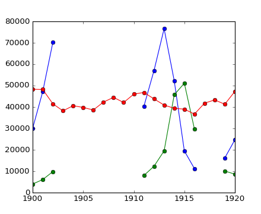{kind=link}
Under the hood: the memory layout of a numpy array¶
A numpy array is:
block of memory + indexing scheme + data type descriptor
- raw data
- how to locate an element
- how to interpret an element

Block of memory¶
>>> x = np.array([1, 2, 3, 4], dtype=np.int32)
>>> x.data
<read-write buffer for 0xa37bfd8, size 16, offset 0 at 0xa4eabe0>
>>> str(x.data)
'\x01\x00\x00\x00\x02\x00\x00\x00\x03\x00\x00\x00\x04\x00\x00\x00'
Memory address of the data:
>>> x.__array_interface__['data'][0]
159755776
Reminder: two ndarrays may share the same memory:
>>> x = np.array([1,2,3,4])
>>> y = x[:]
>>> x[0] = 9
>>> y
array([9, 2, 3, 4])
>>> y.base is x
True
Memory does not need to be owned by an ndarray:
>>> x = '\x01\x02\x03\x04'
>>> y = np.frombuffer(x, dtype=np.int8)
>>> y
array([1, 2, 3, 4], dtype=int8)
>>> y.data
<read-only buffer for 0xa588ba8, size 4, offset 0 at 0xa55cd60>
>>> y.base is x
True
>>> y.flags
C_CONTIGUOUS : True
F_CONTIGUOUS : True
OWNDATA : False
WRITEABLE : False
ALIGNED : True
UPDATEIFCOPY : False
The owndata and writeable flags indicate status of the memory block.
Indexing scheme: strides¶
The question
>>> x = np.array([[1, 2, 3], [4, 5, 6], [7, 8, 9]], dtype=np.int8) >>> str(x.data) '\x01\x02\x03\x04\x05\x06\x07\x08\x09'At which byte in x.data does the item x[1,2] begin?
The answer (in Numpy)
- strides: the number of bytes to jump to find the next element
- 1 stride per dimension
>>> x.strides (3, 1) >>> byte_offset = 3*1 + 1*2 # to find x[1,2] >>> x.data[byte_offset] '\x06' >>> x[1,2] 6
- simple, flexible
C and Fortran order
>>> x = np.array([[1, 2, 3],
[4, 5, 6],
[7, 8, 9]], dtype=np.int16, order='C')
>>> x.strides
(6, 2)
>>> str(x.data)
'\x01\x00\x02\x00\x03\x00\x04\x00\x05\x00\x06\x00\x07\x00\x08\x00\t\x00'
- Need to jump 6 bytes to find the next row
- Need to jump 2 bytes to find the next column
>>> y = np.array(x, order='F')
>>> y.strides
(2, 6)
>>> str(y.data)
'\x01\x00\x04\x00\x07\x00\x02\x00\x05\x00\x08\x00\x03\x00\x06\x00\t\x00'
- Need to jump 2 bytes to find the next row
- Need to jump 6 bytes to find the next column
Similarly to higher dimensions:
- C: last dimensions vary fastest (= smaller strides)
- F: first dimensions vary fastest
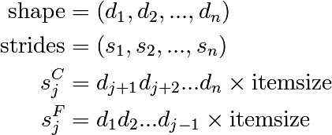
Slicing
- Everything can be represented by changing only shape, strides, and possibly adjusting the data pointer!
- Never makes copies of the data
>>> x = np.array([1, 2, 3, 4, 5, 6], dtype=np.int32)
>>> y = x[::-1]
>>> y
array([6, 5, 4, 3, 2, 1])
>>> y.strides
(-4,)
>>> y = x[2:]
>>> y.__array_interface__['data'][0] - x.__array_interface__['data'][0]
8
>>> x = np.zeros((10, 10, 10), dtype=np.float)
>>> x.strides
(800, 80, 8)
>>> x[::2,::3,::4].strides
(1600, 240, 32)
- Similarly, transposes never make copies (it just swaps strides)
>>> x = np.zeros((10, 10, 10), dtype=np.float)
>>> x.strides
(800, 80, 8)
>>> x.T.strides
(8, 80, 800)
Reshaping
But: not all reshaping operations can be represented by playing with strides.
>>> a = np.arange(6, dtype=np.int8).reshape(3, 2)
>>> b = a.T
>>> b.strides
(1, 2)
So far, so good. However:
>>> str(a.data)
'\x00\x01\x02\x03\x04\x05'
>>> b
array([[0, 2, 4],
[1, 3, 5]], dtype=int8)
>>> c = b.reshape(3*2)
>>> c
array([0, 2, 4, 1, 3, 5], dtype=int8)
Here, there is no way to represent the array c given one stride and the block of memory for a. Therefore, the reshape operation needs to make a copy here.